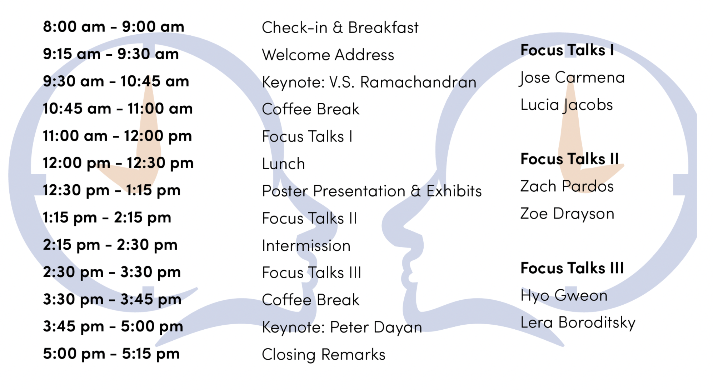

CCSC 2018
[back to conference page <<<]
The Cognitive Science Student Association is pleased to host the tenth annual California Cognitive Science Conference (CCSC) held in April at UC Berkeley. The theme for CCSC 2018 is Past, Present, Furture. We will be exploring this exciting topic through the lenses of psychology, neuroscience, linguistics, anthropology, computer science, philosophy and more.
Schedule
Speakers
Keynote Speakers
V.S. Ramachandran
V.S. Ramachandran is the Director of the Center for Brain and Cognition and a Professor in the Psychology Department and Neurosciences Program at the University of California, San Diego. Ramachandran’s work has focused on topics from visual perception to a range of conditions including synesthesia, phantom limb pain, and autism; he is best known for his experiments in behavioral neurology. Ramachandran has earned numerous accolades, including being named one of TIME magazine's 100 most influential people in the world and, most recently, the Padma Bhushan, the second highest civilian award in India. In addition to his published research, Ramachandran is the author of several books, including the acclaimed “Phantoms in the Brain.”
Peter Dayan
Peter Dayan is the Director of Computational Neuroscience at the Gatsby Computational Neuroscience Unit in University College London, and a researcher at Uber AI Labs. His research focuses on mathematical and computational modelling of neural processing, particularly representation and learning. A major focus of his work is on understanding the ways in which animals and humans choose appropriate actions in the face of rewards and punishments, and the processes by which they form neural representations of the world. Dr. Dayan has been honored with both the Rumelhart and Brain prizes for his substantial contributions to the modern theoretical understanding of human cognition. He has over 200 publications and is the co-author of ‘Theoretical Neuroscience,’ one of the field’s leading textbooks.
Focus Talk Speakers
Lera Boroditsky
Dr. Boroditsky received her B.A. degree in cognitive science at Northwestern University and her Ph.D. in cognitive psychology from Stanford University. She is currently an Associate Professor of Cognitive Science at the University of California, San Diego and is the Editor in Chief of Frontiers in Cultural Psychology. She has previously served on the faculty of MIT and Stanford. She studies language and cognition with a special focus on the relationships between the mind and world. Dr. Boroditsky has been named one of the 25 Visionaries changing the world by the Utne Reader, and is also a Searle Scholar, a McDonnell scholar, recipient of an NSF Career award, and an APA Distinguished Scientist lecturer.
Jose Carmena
Dr. Jose Carmena is a professor of Electrical Engineering and Neuroscience at UC Berkeley, as well as the Co-Director of the Center for Neural Engineering and Prostheses at UC Berkeley and UCSF. Dr. Carmena's work leverages neuroplasticity, machine learning, and neurotechnology to ask how the brain learns and controls movement, and to develop smart prosthetics and neurotherapies. He has been the recipient of numerous awards, including the McKnight Technological Innovations in Neuroscience Award (2017), Bakar Fellowship (2012), the IEEE Engineering in Medicine and Biology Society Early Career Achievement Award (2011), the Aspen Brain Forum Prize in Neurotechnology (2010), and the National Science Foundation CAREER Award (2010).
Zoe Drayson
Dr. Zoe Drayson is an Assistant Professor in Philosophy at the University of California, Davis. She earned her PhD in Philosophy from the University of Bristol, and has previously been a Research Fellow at the University of Stirling, a Visiting Fellow at the Center for Philosophy of Science at the University of Pittsburgh, and a Postdoctoral Research Fellow at the Australian National University. Her research is primarily in philosophy of mind and the philosophy of cognitive science, including psychological explanation, embodied and extended cognition, theories of perception, unconscious/implicit/tacit cognition, the nature of representation, and the philosophy of psychiatry.
Hyo Gweon
Hyo Gweon is an assistant professor of Psychology at Stanford University. She uses a mixture of approaches — developmental, computational, and neuroimaging — to explore how we make inferences about others’ minds, how learning occurs in social contexts, and what are the cognitive and neural mechanisms underlying these processes. She received her Ph.D. from M.I.T. where she was advised by Laura Schulz and Rebecca Saxe. In 2014, she was awarded the Kavli Frontiers of Science Fellowship.
Lucia Jacobs
Lucia Jacobs is a Professor in the Department of Psychology and the Helen Wills Neuroscience Institute at UC Berkeley. The main focus of her research is in the domain of animal cognition, particularly field studies of decision making in squirrels, sex differences in spatial cognition in rodents and humans and her current studies of olfactory navigation in search dogs and humans. Both this empirical work and her theoretical work on the evolution of limbic system structures aim to elucidate how cognition evolves. She received her Ph.D. in Ecology and Evolution from Princeton University. Dr. Jacobs has received numerous awards, including the NSF Career award and the University of California’s Prytanean Faculty Award.
Zachary Pardos
Dr. Zachary Pardos is an Assistant Professor in the School of Information and the Graduate School of Education at the University of California, Berkeley. Dr. Pardos earned his PhD in Computer Science from the Worcester Polytechnic Institute where he spent extensive time with K-12 educators and students working to integrate educational technology into the curriculum as a formative assessment tool. His research focal areas are on the representation of knowledge as communicated by student behavior and engineers personalized supports leveraging big data in education. His current projects look at the increasing upward mobility in the California postsecondary system and using behavioral and semantic data to map out paths to cognitive and career achievement in K-16. At UC Berkeley he directs the Computational Approaches to Human Learning (CAHL) research lab and is the recent recipient of an NSF AI educator award. He teaches courses on data mining and analytics, digital learning environments, and machine learning in education.
© 2021 Berkeley CSSA

We are a student group acting independently of the University of California. We take full responsibility for our organization and this web site.